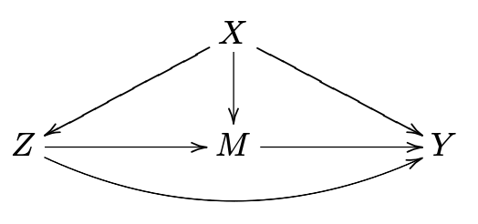
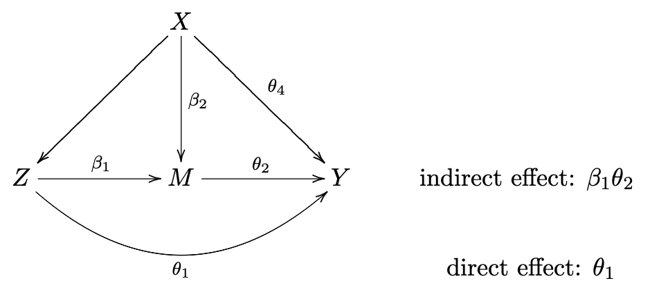
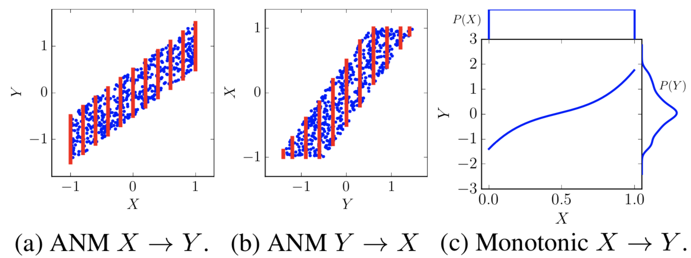
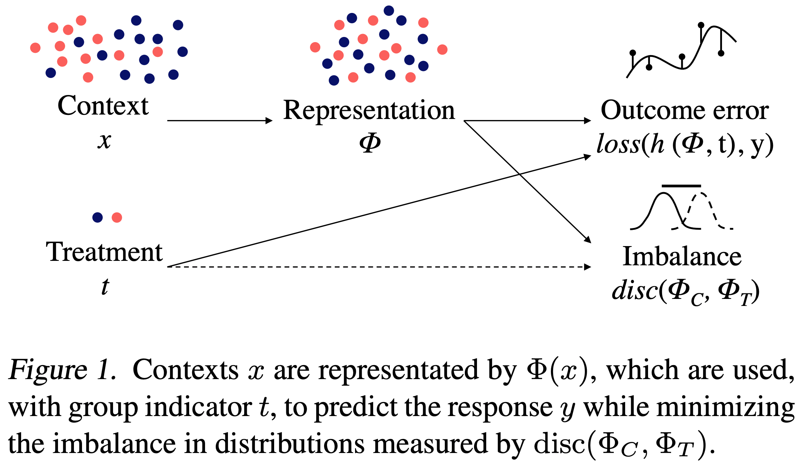
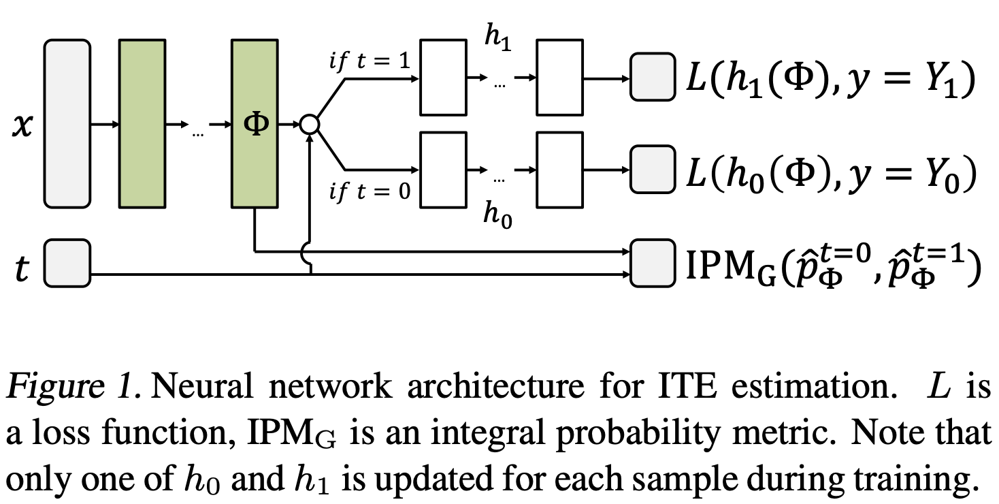
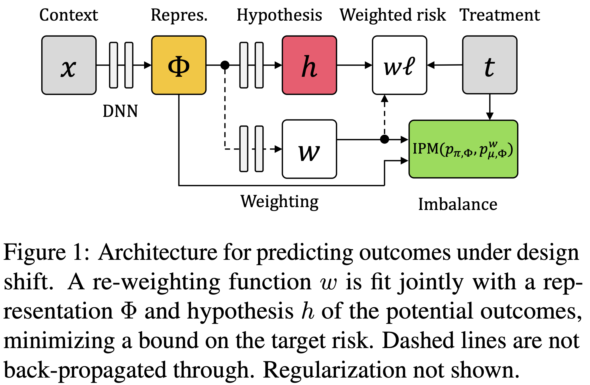

causal inference
view markdownSome good packages: msft econML, uber causalml, msft dowhy
classic studies
- Descriptive Representation and Judicial Outcomes in Multiethnic Societies (Grossman et al. 2016)
- judicial outcomes of arabs depended on whether there was an Arab judge on the panel
- Using Maimonides’ Rule to Estimate the Effect of Class Size on Scholastic Achievement (angrist & lavy 1999)
- reducing class size induces a signicant and substantial increase in test scores for fourth and 5th graders, although not for third graders.
- Smoking and Lung Cancer: Recent Evidence and a Discussion of Some Questions (cornfield et al. 1959)
- not a traditional statistics paper
- most of it is a review of various scientific evidence about smoking and cancer
- small methodology section that describes an early version of sensitivity analysis
- describes one of the most important contributions causal inference has made to science
- Attributing Effects to a Cluster-Randomized Get-Out-the-Vote Campaign (hansen & bowers 2009)
- about a randomized experiment
- proved complex to analyze and led to some controversy in political science
- resolves that controversy using well-chosen statistical tools.
- Because randomization is present in the design I think the assumptions are much less of a stretch than in many settings (this is also the case in the Angrist, Imbens, Rubin paper)
natural experiments
- John Snow on cholera - natural experiment - change of water pollution allowed for computing effect of the water pollution on cholera
- Who Gets a Swiss Passport? A Natural Experiment in Immigrant Discrimination (Hainmueller & Hangartner 2013)
- naturalization decisions vary with immigrants’ attributes
- is there immigration against immigrants based on country of origin?
- citizenship requires voting by municipality
- When Natural Experiments Are Neither Natural nor Experiments (sekhon & titunik 2012)
- even when natural interventions are randomly assigned, some of the treatment–control comparisons made available by natural experiments may not be valid
instrumental variables
- Identification of Causal Effects Using Instrumental Variables (angrist, imbens, & rubin 1996)
- bridges the literature of instrumental variables in econometrics and the literature of causal inference in statistics
- applied paper with delicate statistics
- carefully discuss the assumptions
- instrumental variables - regression w/ constant treatment effects
- effect of veteran status on mortality, using lottery number as instrument
matching
- Matching and thick description in an observational study of mortality after surgery. (rosenbaum & silber 2001)
- spends a lot of time discussing links between quantitative and qualitative analyses
- takes the process of checking assumptions very seriously, and it deals with an important scientific problem
“paradoxes”
- simpson’s paradox = yule-simpson paradox - trend appears in several different groups but disappears/reverses when groups are combined
- Sex Bias in Graduate Admissions: Data from Berkeley (bickel et al. 1975)
- e.g. overall men seemed to have higher acceptance rates, but in each dept. women seemed to have higher acceptance rates - explanation is that women selectively apply to harder depts.
graph LR A(Gender) -->B(Dept Choice) B --> C(Acceptance rate) A --> C
- monty hall problem: why you should switch
graph LR A(Your Door) -->B(Door Opened) C(Location of Car) --> B - berkson’s paradox - diseases in hospitals are correlated even when they are not in the general population
- possible explanation - only having both diseases together is strong enough to put you in the hospital
problems beyond ATE
causal mechanisms
- treatment effect variation?
- principal stratification
- interference
mediation analysis
Mediation analysis aims to identify a mechanism through which a cause has an effect. Direct effects measure when the treatment varies as mediators are held constant.
-
if there are multiple possible paths by which a variable can exert influence, can figure out which path does what, even with just observational data
-
cannot just condition on $M$! This can lead to spurious associations
-
which pathway do causes flow through from X to Y (direct/indirect?)
-

-
consider potential outcomes with hypothetical intervention on $T$:
- ${M(t), Y(t)}$
-
hypothetical intervention on $T$ and $M$:
- ${Y(t, m)}$
- hypothetical intervention on $T$ fixing $M$ to $M(t’) = M_{t’}$ (nested potential outcome, robs & greenland, 1992; pearl, 2001)
- ${Y(t, M_{t’})}$
- has also been called a priori counterfactual (frangakis & rubin, 2002)
- when $t \neq t’$, this can’t be observed and can’t be falsified
-
total effect $\tau=E{Y(1)-Y(0)} = \textrm{NDE + NIE}$
- assumes composition assumption $Y(1, M_1) = Y(1)$, very reasonable
-
natural direct effect $\mathrm{NDE}=E\left{Y\left(1, M_{0}\right)-Y\left(0, M_{0}\right)\right}$
- controlled direct effect $\mathrm{CDE}=E\left{Y\left(1, m\right)-Y\left(0, m\right)\right}$ is simpler: sets mediator to some assumed value $m$ rather than the actual value seen in the data $M_0$
- w/ composition: $=E\left{Y\left(1, M_{0}\right)-Y\left(0\right)\right}$
-
natural indirect effect $\mathrm{NIE}=E\left{Y\left(1, M_1\right)-Y\left(1, M_{0}\right)\right}$
-
w/ composition: $=E\left{Y\left( 1 \right)-Y\left(1, M_0\right)\right}$
-
mediation formula
-
can condition effects on $x$
- $\operatorname{NDE}(x)=E\left{Y\left(1, M_{0}\right)-Y\left(0, M_{0}\right) \mid X=x\right}$
- $\operatorname{NIE}(x)=E\left{Y\left(1, M_{1}\right)-Y\left(1, M_{0}\right) \mid X=x\right}$
-
estimators
- $\widehat{NDE}(x) = E\left{Y\left(t, M_{t^{\prime}}\right) \mid X=x\right}=\sum_{m} E(Y \mid T=t, M=m, X=x) \operatorname{pr}\left(M=m \mid T=t^{\prime}, X=x\right)$
- $\widehat{NIE}(x) = E\left{Y\left(t, M_{t^{\prime}}\right)\right}=\sum_{x} E\left{Y\left(t, M_{t^{\prime}}\right) \mid X=x\right} P(X=x)$
-
estimators depend on 4 assumptions
-
no treatment-outcome confounding: $T \perp Y(t, m) \mid X$
-
no mediator-outcome confounding: $M \perp Y(t, m) \mid (X, T)$
-
assumption 3: no treatment-mediator confounding: $T \perp M(t) \mid X$
-
no cross-world independence between potential outcomes and potential mdediators: $Y(t, m) \perp M(z’) \; \forall \; t, t’, m$
-
- assumption notes
- 1 + 2 are equivalent to $T, M) \perp Y(t, m) \mid X$
- first three essentially assume that $T$ and $M$ are both randomized
- 1-3 are very strong but hold with squentially randomized treatment + mediator
- 4 cannot be verified
- baron-kenny method (assumes linear models):

-
heterogenous treatment effects
Heterogenous treatment effects refer to effects which differ for different subgroups / individuals in a population and requires more refined modeling.
-
conditional average treatment effect (CATE) - get treatment effect for each individual conditioned on its covariates $\mathbb E [y x, t=1] - \mathbb E[y x, t=0]$ (different from ITE $Y^{T=1}_i - Y^{T=0}_i$) - meta-learners - break down CATE into regression subproblems
- e.g. S-learner (hill 11) - “S” stands for “single” and fits a single statistical model for $\mu_1 - \mu_0$
- can be biased towards 0
- e.g. T-learner (foster et al. 2011) - “T” stands for “two” because we fit 2 models: one model for conditional expectation of each potential outcome: $\hat \mu_1(x), \hat \mu_0(x)$
- can have issues, e.g. different effects are regularized differently
- doesn’t do well with variation in the propensity score. If $e(x)$ varies considerably, then our estimates of $\hat \mu(0)$ will be driven by data in areas with many control units (i.e., with $e(x)$ closer to 0), and those of $\hat \mu (1)$ by regions with more treated units (i.e., with e(x) closer to 1).
- e.g. X-learner (kunzel et al. 19) - “X” stands for crossing between estimates and conditional outcomes for each group
- first, fit $\hat \mu_1(x), \hat \mu_0(x)$
- second, compute effects using all the data $\begin{aligned} \hat{\tau}{1, i} &=Y{i}(1)-\hat{\mu}{0}\left(x{i}\right) \ \hat{\tau}{0, i} &=\hat{\mu}{1}\left(x_{i}\right)-Y_{i}(0) \end{aligned}$
- finally, combine effects $\hat{\tau}(x)=g(x) \hat{\tau}{0}(x)+(1-g(x)) \hat{\tau}{1}(x)$
- $g(x)$ is weighting function, e.g. estimated propensity score
- e.g. R-learner (robinson, 1988; nie-wager, 20) - regularized semiparametric learner
- $\hat{\tau}{R}(\cdot)=\operatorname{argmin}{\hat \tau}\left{\frac{1}{n} \sum_{i=1}^{n}\left(\underbrace{Y_{i}-\hat \mu\left(X_{i}\right)}{\text{Y residual}}-\left(T{i}-\hat e\left(X_{i}\right)\right) \hat \tau\left(X_{i}\right)\right)^{2}\right. \left.+ \underbrace{\Lambda_{n}\left(\hat \tau(\cdot)\right)}_{\text{regularization}}\right}$
-
$\hat \mu(x) = E[Y_i X=x]$ - use cross-fitting to estimate $\hat \tau$ and $\hat \mu$
- $\tau$ takes a form, e.g. LASSO
-
- $\hat{\tau}{R}(\cdot)=\operatorname{argmin}{\hat \tau}\left{\frac{1}{n} \sum_{i=1}^{n}\left(\underbrace{Y_{i}-\hat \mu\left(X_{i}\right)}{\text{Y residual}}-\left(T{i}-\hat e\left(X_{i}\right)\right) \hat \tau\left(X_{i}\right)\right)^{2}\right. \left.+ \underbrace{\Lambda_{n}\left(\hat \tau(\cdot)\right)}_{\text{regularization}}\right}$
- e.g. S-learner (hill 11) - “S” stands for “single” and fits a single statistical model for $\mu_1 - \mu_0$
- tree-based methods
- e.g. causal tree (athey & imbens, 16) - like decision tree, but change splitting criterion for differentiating 2 outcomes + compute effects for each leaf on out-of-sample data
- e.g. causal forest (wager & athey, 18) - extends causal tree to forest
- e.g. BART (hill, 12) - takes treatment as an extra input feature
- neural-net based methods
- e.g. TARNet (shalit et al. 2017) - full notes below, use data from both groups
- meta-learners - break down CATE into regression subproblems
- validation
- can cross-validate CATE on R-loss (sampling variability is high, but may not always be an issue (wager, 2020))
- indirect approach - use CATE to identify subgroups, and then use out-of-sample data to evaluate these subgroups
- fit $\hat \tau$ then rerun semiparametric model and see if coefficient for $\hat \tau$ ends up close to 1
- more discussion in (athey & wager, 2019) and (chernozhukov et al. 2017)
- subgroup analysis - identify subgroups with treatment effects far from the average
- generally easier than CATE
- staDISC (dwivedi, tan et al. 2020) - learn stable / interpretable subgroups for causal inference
- CATE - estimate with a bunch of different models
- meta-learners: T/X/R/S-learners
- tree-based methods: causal tree/forest, BART
- calibration to evaluate subgroup CATEs
- main difficulty: hard to do model selection / validation (especially with imbalanced data)
- often use some kind of proxy loss function
- solution: compare average CATE within a bin to CATE on test data in bin
- actual CATE doesn’t seem to generalize
- but ordering of groups seems pretty preserved
- stability: check stability of this with many CATE estimators
- main difficulty: hard to do model selection / validation (especially with imbalanced data)
- subgroup analysis
- use CATE as a stepping stone to finding subgroups
- easier, but still linked to real downstream tasks (e.g. identify which subgroup to treat)
- main difficulty: can quickly overfit
- cell-search - sequential
- first prune features using feature importance
- target: maximize a cell’s true positive - false positive (subject to using as few features as possible)
- sequentially find cell which maximizes target
- find all cells which perform close to as good as this cell
- remove all cells contained in another cell
- pick one randomly, remove all points in this cell, then continue
- stability: rerun search multiple times and look for stable cells / stable cell coverage
- CATE - estimate with a bunch of different models
- Estimating individual treatment effect: generalization bounds and algorithms (shalit, johansson, & sontag, 2017)
- bound the ITE estimation error using (1) generalization err of the repr. and (2) the distance between the treated and control distrs., e.g. MMD
reinforcement (policy) learning
- rather than estimating a treatment effect, find a policy that maximizes some expected utility (e.g. can define utility as the potential outcome $\mathbb E[Y_i(\pi(X_i))]$)
- in this case, policy is like an intervention
causal discovery
Causal discovery aims to identify causal relationships (sometimes under some smoothness / independence assumptions. This is often impossible in general. Also called causal relation learning, causal search.
- a lot of our science does not actually rest on experiments (e.g. physics, geology)
- hume (1739) - all we can observe is association, never actual counterfactuals or causes (“necesary connexion”)
- requires careful model selection
- rvw: Review of Causal Discovery Methods Based on Graphical Models
- constraint-based algorithms - use conditional indep. checks to determine graphs up to markov equivalence
- faithfulness means the statistical dependence between variables estimated from the data does not violate the independence defined by any causal graph which generates the data
- extensions to more general distrs., unobserved confounders
- peter-clark (PC) algorithm - first learns undirected graph, then detects edge directions and returns equivalence class
- assumes that there is no confounder (unobserved direct common cause of two measured variables)
- fast causal inference (FCI) (spirtes et al. 200)
- can deal with confounders - instead of edge/no edge have 3 possibilities: edge, no edge, confounding by unobserved missing common cause (+possibly another possibility for “unknown”)
- score-based algorithms - replace conditional indep. tests with godness of fit tests (e.g. BIC)
- assume there are no confounders
- still can only determine graphs up to markov equivalence
- optimizing goodness of fit is NP-hard, so often use heuristics such as greedy equivalence search (GES) (chickering, 2002)
- functional causal models - assume a variable can be written as a function of its direct causes and some noise term
- can distinguish between different DAGs in same equivalence class
-
e.g. (hyavarinen & zhang, 2016) assume additive noise and that $p(E C)$ can be modeled while $P(C E)$ cannot - e.g. LiNGAM (Shimizu et al., 2006), ICA-LINGAM - linear relations between different variables and noise
- additive noise models ANM (Hoyer et al., 2009) relax the linear restriction
- ANM-MM (Hu et al., 2018)
- post-nonlinear models PNL (Zhang and Hyvarinen, 2009) expand the functional space with non-linear relations between the variables and the noise
-
many models assume the generating cause distribution $p(C)$ is in some sense “independent” to the mechanism $P(E C)$ - e.g. IGCI (Janzing et al., 2012) uses orthogonality in information space to express the independence between the two distributions
- e.g. KCDC (Mitrovic et al., 2018) uses invariance of Kolmogorov complexity of conditional distribution
- e.g. RECI (Blobaum et al., 2018) extends IGCI to the setting with small noise, and proceeds by comparing the regression errors in both possible directions
- check variables which reduce entropy the most
- Origo : causal inference by compression (budhathoki & vreekan, 2017) - similar intuition as ICM: causal directions are more easily compressible
-
Learning and Testing Causal Models with Interventions (acharya et al. 2018)
- given DAG, want to learn distribution on interventions with minimum number of interventions, variables intevened on, numper of samples draw per intervention
- Discovering Causal Signals in Images (lopez-paz et al. 2017)
- C(A, B) - count number of images in which B would disappear if A was removed
- we say A causes B when C(A, B) is (sufficiently) greater than the converse C(B, A)
- basics
- given joint distr. of (A, B), we want to know if A -> B, B-> A
- with no assumptions, this is nonidentifiable
- requires 2 assumptions
- ICM: independence between cause and mechanism (i.e. the function doesn’t change based on distr. of X) - this usually gets violated in anticausal direction
- causal sufficiency - we aren’t missing any vars
- ex.

- here noise is indep. from x (causal direction), but can’t be independent from y (non-causal direction)
- in (c), function changes based on input
- can turn this into binary classification and learn w/ network: given X, Y, does X->Y or Y-X?
- given joint distr. of (A, B), we want to know if A -> B, B-> A
- on images, they get scores for different objects (w/ bounding boxes)
- eval - when one thing is erased, does the other also get erased?
- link to iclr talk (bottou 2019)
- Visual Causal Feature Learning (chalupka, perona, & eberhardt, 2015)
- assume the behavior $T$ is a function of some hidden causes $H_i$ and the image
- Causal Coarsening Theorem - causal partition is coarser version of the observational partition
-
observational partition - divide images into partition where each partition has constant prediction $P(T I)$ -
causal partition - divide images into partition where each partition has constant $P(T man(I))$ - $man(I)$ does visual manipulation which changes $I$, while keeping all $H_i$ fixed and $T$ fixed
- ex. turn a digit into a 7 (or turn a 7 into not a 7)
- $man(I)$ does visual manipulation which changes $I$, while keeping all $H_i$ fixed and $T$ fixed
-
-
can further simplify the problem into $P(T I) = P(T C, S)$ - $C$ are the causes and $S$ are the spurious correlates
-
any other variable $X$ such that $P(T I) = P(T X)$ has Shannon entropy $H(X) \geq H(C, S)$ - these are the simplest descriptions of $P(T I$)
- causal effect prediction
-
first, create causal dataset of $P(T man(I))$ and train, so the model can’t learn spurious correlations - then train on this - very similar to adversarial training
-
- assume the behavior $T$ is a function of some hidden causes $H_i$ and the image
- Visual Physics: Discovering Physical Laws from Videos
- 3 steps
- Mask R-CNN finds bounding box of object and center of bounding box is taken to be location
- $\beta-VAE$ compresses the trajectory to some latent repr. (while also being able to predict held-out points of the trajectory)
- Eureqa package does eq. discovery on latent repr + trajectory
- includes all basic operations, such as addition, mult., sine function
- R-squared value measures goodness of fit
- see also SciNet - Discovering physical concepts with neural networks (iten et al. 2020)
- see also the field of symbolic regression
- genetic programming is the most pervalent method here
- alternatives: sparse regression, dimensional function synthesis
- 3 steps
- Causal Mosaic: Cause-Effect Inference via Nonlinear ICA and Ensemble Method (wu & fukumizu, 2020)
- focus on bivariate case

stable/invariant predictors
Under certain assumptions, invariance to data perturbations (i.e. interventions) can help us identify causal effects.
invariance hierarchies
- The Hierarchy of Stable Distributions and Operators to Trade Off Stability and Performance (subbaswamy, chen, & saria 2019)
- different predictors learn different things
- only pick the stable parts of what they learn (in a graph representation)
- there is a tradeoff between stability to all shifts and average performance on the shifts we expect to see
- different types of methods
- transfer learning - given unlabelled test data, match training/testing representations
- proactive methods - make assumptions about possible set of target distrs.
- data-driven methods - assume independence of cause and mechanism, like ICP, and use data from different shifts to find invariant subsets
- explicit graph methods - assume explicit knowledge of graph representing the data-generating process
- hierarchy
-
level 1 - invariant conditional distrs. of the form $P(Y \mathbf Z)$ -
level 2 - conditional interventional distrs. of the form $P(Y do(\mathbf W), \mathbf Z)$ - level 3 - distributions corresponding to counterfactuals
-
- Causality for Machine Learning (scholkopf 19)
- most of ml is built on the iid assumption and fails when it is violated (e.g. cow on a beach)
invariance algorithms
- algorithms overview (see papers for more details) + implementations
- ICP - invariant causal prediction - find feature set where, after conditioning, loss is the same for all environments
- fails when distr. of residuals varies across environments
- IRM - invariant risk minimization (v1) - find a feature repr. such that the optimal classifier, on top of that repr., is the identity function for all environments
- GroupDRO - distributionally robust optimization (e.g. encourage strict equality between err of each group)
- ERM - empirical risk minimization - minimize total training err
- domain-adversarial techniques: find a repr. which does not differ across environments, then predict
- fails when distr. of causes changes across environments
- AND-mask - minimize the err only in directions where the sign of the gradient of the loss is the same for most environments
- IGA - inter-environmental gradient alignment - ERM + reduce variance of the gradient of the loss per environment: $\lambda \operatorname{trace}\left(\operatorname{Var}\left(\nabla_{\theta} L_{\mathcal{E}}(\theta)\right)\right)$
- ICP - invariant causal prediction - find feature set where, after conditioning, loss is the same for all environments
- Invariance, Causality and Robustness - ICP (buhlmann 18)
- predict $Y^e$ given $X^e$ such that the prediction “works well” or is “robust” for all $e ∈ \mathcal F$ based on data from much fewer environments $e \in \mathcal E$
- key assumption (invariance): there exists a subset of “causal” covariates - when conditioning on these covariates, the loss is the same across all environments $e$
- assumption: ideally $e$ changes only the distr. of $X^e$ (so doesn’t act directly on $Y^e$ or change the mechanism between $X^e$ and $Y^e$)
- when these assumptions are satisfied, then minimizing a worst-case risk over environments $e$ yields a causal parameter
- identifiability issue: we typically can’t identify the causal variables without very many perturbations $e$
- Invariant Causal Prediction (ICP) only identifies variables as causal if they appear in all invariant sets (see also Peters, Buhlmann, & Meinshausen, 2015)
- brute-force feature selection
- anchor regression model helps to relax assumptions
- predict $Y^e$ given $X^e$ such that the prediction “works well” or is “robust” for all $e ∈ \mathcal F$ based on data from much fewer environments $e \in \mathcal E$
- Invariant Risk Minimization - IRM (arjovsky, bottou, gulrajani, & lopez-paz 2019)
- idealized formulation: $\begin{array}{ll}\min {\Phi: \mathcal{X} \rightarrow \mathcal{H}} & \sum{e \in \mathcal{E}{\mathrm{tr}}} R^{e}(w \circ \Phi) \ \text { subject to } & w \in \underset{\bar{w}: \mathcal{H} \rightarrow \mathcal{Y}}{\arg \min } : R^{e}(\bar{w} \circ \Phi), \text { for all } e \in \mathcal{E}{\mathrm{tr}}\end{array}$
- $\Phi$ is repr., $w \circ \Phi$ is predictor
- practical formulation: $\min {\Phi: \mathcal{X} \rightarrow \mathcal{Y}} \sum{e \in \mathcal{E}{\mathrm{tr}}} R^{e}(\Phi)+\lambda \cdot\left|\nabla{w \mid w=1.0} R^{e}(w \cdot \Phi)\right|^{2}$
- random splitting causes problems with our data
- what to perform well under different distributions of X, Y
- can’t be solved via robust optimization
- a correlation is spurious when we do not expect it to hold in the future in the same manner as it held in the past
- i.e. spurious correlations are unstable
- assume we have infinite data, and know what kinds of changes our distribution for the problem might have (e.g. variance of features might change)
- make a model which has the minimum test error regardless of the distribution of the problem
- adds a penalty inspired by invariance (which can be viewed as a stability criterion)
- idealized formulation: $\begin{array}{ll}\min {\Phi: \mathcal{X} \rightarrow \mathcal{H}} & \sum{e \in \mathcal{E}{\mathrm{tr}}} R^{e}(w \circ \Phi) \ \text { subject to } & w \in \underset{\bar{w}: \mathcal{H} \rightarrow \mathcal{Y}}{\arg \min } : R^{e}(\bar{w} \circ \Phi), \text { for all } e \in \mathcal{E}{\mathrm{tr}}\end{array}$
- Learning explanations that are hard to vary - AND-mask (parascandolo…sholkopf, 2020)
- basically, gradients should be consistent during learning
- after learning, they should be consistent within some epsilon ball
- practical algorithm: AND-mask
- like zeroing out those gradient components with respect to weights that have inconsistent signs across environments
- basically same complexity as normal GD
- previous works used cosine similarity between weights in different settings
- experiments
- real data is spiral but each env is linearly separable - still able to learn spiral
- cifar - with real labels, performance unaffected; with random labels, training acc drops significantly
- each example is its own environment
- with noisy labels, imposes good regularization
- rl - works well on coinrun
- like zeroing out those gradient components with respect to weights that have inconsistent signs across environments
- propose invariant learning consistency (ILC)- measures expected consistency of the soln found by an algorithm given a hypothesis class
- consistency - what extent a minimum of the loss surface appears only when data from different envs are pooled
- given algorithm $\mathcal A$, maximize this: $\mathrm{ILC}\left(\mathcal{A}, p_{\theta^{0}}\right):= \underbrace{-\mathbb{E}{\theta^{0} \sim p\left(\theta^{0}\right)}}{\text{expectation over reinits}}\left[\mathcal{I}^{\epsilon} (\underbrace{\mathcal{A}{\infty}(\theta^{0}, \mathcal{E}}{\hat \theta}) \right]$
-
inconsistency score for a solution $\hat \theta$ given environments $e$: $\mathcal{I}^{\epsilon}(\hat \theta):=\overbrace{\max {\left(e, e^{\prime}\right) \in \mathcal{E}^{2}} }^{\text{env. pairs}} \underbrace{\max _{\theta \in N{e, \hat \theta}^{\epsilon}}}{\text{low-loss region around $\hat \theta$}} \overbrace{\mid \mathcal{L}{e^{\prime}}(\theta)-\mathcal{L}_{e}(\theta) }^{\text{loss between envs.}}$ -
$N_{e, \hat \theta}^{\epsilon}$ is path-connected region around $\hat \theta$ where $\left{\theta \in \Theta\right.$ s.t. $\left \mathcal{L}{e}(\theta)-\mathcal{L}{e}\left(\hat \theta\right)\right \leqslant \epsilon$
-
-
- basically, gradients should be consistent during learning
-
Invariant Risk Minimization Games (ahuja et al. 2020) - pose IRM as finding the Nash equilibrium of an ensemble game among several environments
- Invariant Rationalization (chang et al. 2020) - identify a small subset of input features – the rationale – that best explains or supports the prediction
-
key assumption: $Y \perp E Z$ - $\max {\boldsymbol{m} \in \mathcal{S}} I(Y ; \boldsymbol{Z}) \quad$ s.t. $\boldsymbol{Z}= \overbrace{\boldsymbol{m}}^{\text{binary mask}} \odot \boldsymbol{X}, \quad \underbrace{Y \perp E \mid \boldsymbol{Z}}{\text{this part is invariance}}$
- solve this via 3 nets with adv. penalty to approximate invariance
- standard maximum mutual info objective is just $\max _{\boldsymbol{m} \in \mathcal{S}} I(Y ; \boldsymbol{Z}) \quad$ s.t. $\boldsymbol{Z}= \overbrace{\boldsymbol{m}}^{\text{binary mask}} \odot \boldsymbol{X}$ (see lei et al. 2016)
- ex. $X$ is text reviews for beer, $Y$ is aroma, $E$ could be beer brand
-
- Linear unit-tests for invariance discovery (aubin et al. 2020) - a set of 6 simple settings where current IRM procedures fail
- test 1 (colormnist-style linear regr): $x_{inv} \to \tilde y \to x_{spu}$
- $\tilde y \to y$
- test 2 (cows vs camels binary classification): $y=mean(x_{inv})>0$, but $x_{inv} \propto x_{spu}$
- test 3 (small invariant margin): $y_i\sim Bern(1/2)$, $x_{inv} = \pm 0.1+$noise, $x_{spu} = \pm \mu^e$ + noise, where $\mu^e ~ N(0, 1)$
- scrambling: apply random rotation matrix to inputs
- test 1 (colormnist-style linear regr): $x_{inv} \to \tilde y \to x_{spu}$
misc problems
- Incremental causal effects (rothenhausler & yu, 2019)
- instead of considering a treatment, consider an infinitesimal change in a continuous treatment
- use assumption of local independence and can prove some nice things
- local ignorability assumption states that potential outcomes are independent of the current treatment assignment in a neighborhood of observations
-
probability of necessity $PN(t, y) = P(Y^{T=t’}=y’ T=t, Y=y)$ = “probability of causation” (Robins & Greenland, 1989) -
find the probability that $Y$ would be $y′$ had $T$ been $t’$, given that, in reality, $Y$ is actually $y$ and $T$ is $t$
-
If $Y$ is monotonic relative to $T$ $i.e ., Y^{T=1}(x) \geq Y^{T=0}(x),$ then $\mathrm{PN}$ is identifiable whenever the causal effect $P(y \mid d o(t))$ is identifiable and, moreover, \(\mathrm{PN}=\underbrace{\frac{P(y \mid t)-P\left(y \mid t^{\prime}\right)}{P(y \mid t)}}_{\text{excess risk ratio}}+\underbrace{\frac{P\left(y \mid t^{\prime}\right)-P\left(y \mid d o\left(t^{\prime}\right)\right)}{P(t, y)}}_{\text{confounding adjustment}}\)
-
-
causal transportability - seeks to identify conditions under which causal knowledge learned from experiments can be reused in different domains with observational data only
-
Radical Empiricism and Machine Learning Research (pearl 2021)
- contrast the “data fitting” vs. “data interpreting” approaches to data-science
- current research is too empiricist (data-fitting based) - should include man-made models of how data are generated
- 3 reasons: expediency, transparency, explainability
- expediency: we often have to ask fast (e.g. covid) and use our knowledge to guide future experiments
- transparency: need repr.d with right level off abstraction
- explainability: humans must understand inferences
transferring out-of-sample
- Elements of External Validity: Framework, Design, and Analysis
- external validity - when do results from an RCT generalize to new settings?
- X-, T-, Y -, and C-validity (units, treatments, outcomes, and contexts)
- two goals: effect-generalization + sign-generalization
different assumptions / experimental designs
-
unconfoundedness $T_i \perp (Y_i(0), Y_i(1)) X_i$ is strong -
sometimes we may perfer $T_i \perp (Y_i(0), Y_i(1)) X_i, Z_i$ for some unobserved $Z_i$ that we need to figure out
-
- The Blessings of Multiple Causes (wang & blei, 2019) - having multiple causes can help construct / find all the confounders
- deconfounder algorithm
- fit a factor model of causes
- estimate a repr $Z_i$ of data point $A_i$ - $Z_i$ renders the causes conditionally independent
- now, $Z_i$ is a substitute for unobserved confounders
- assumptions
- no causal arrows among causes $A_i$
- no unobserved single-cause confounders: any missing confounder affects multiple observed variables
- –> can check the fit of the factor model, but won’t check perfectly
- the substitute confounder: there is enough information in the data to learn the variable $Z$ which renders causes conditionally independent
- strong assumption!
- thm
-
with observed covariates X, weak unconfoundedness: $A_1, …A_m \perp Y(a) Z, X$ (i.e. $Z$ contains all multi-cause confounders, $X$ contains all single-cause confounders)
-
- replaces an uncheckable search for possible confounders with the checkable goal of building a good factor model of observed casts.
- controversial whether this works in general
- Towards Clarifying the Theory of the Deconfounder (wang & blei, 2020)
- On Multi-Cause Causal Inference with Unobserved Confounding: Counterexamples, Impossibility, and Alternatives (d’amour 2019)
- deconfounder algorithm
synthetic control/interventions
- synthetic control
- Using Synthetic Controls rvw paper (abadie 2020)
- setting: treatment occurs at time t0 on multiple units (e.g. policy in california)
- goal: estimate effect of treatment (e.g. effect of policy in california)
- approach: impute counterfactual (california time-series without policy) by weighted combination on observed outcomes for other observations (e.g. average other “similar” states)
- per-observation weights are learned during pre-intervention period with cross-validation procedure
- per-feature weights are also learned (bc matching on some features is more important than others)
- per-observation weights are learned during pre-intervention period with cross-validation procedure
- The Economic Costs of Conflict: A Case Study of the Basque Country (Abadie & G, 2003)
- Synthetic Control Methods for Comparative Case Studies: Estimating the Effect of California’s Tobacco Control Program (abadie et al. 2010)
- Using Synthetic Controls rvw paper (abadie 2020)
solutions to basic problems
learning “causal representations”
- Learning Representations for Counterfactual Inference (johansson et al. 2016)

-
assumption similar to ignorability: the treatment assignment information (and any info which predicts it) should not influence the ITE: $T \perp !!! \perp { Y^{T=1}, Y^{T=0}} X$ - often not the case, e.g. medical symptoms lead doctors to give a treatment more
- in this case, we will lose info that can help us predict the CATE
- also an extra loss: penalty that encourages counterfactual preds to be close to nearest observed outcome from the same set
- fit linear ridge regression on top of representation $\phi$
- not exactly the same as the setting in fair repr. learning or domain adversarial training - MMD or Wasserstein distance instead of classification
- same idea present in Training confounder-free deep learning models for medical applications (zhou et al. 2020)
- Estimating individual treatment effect: generalization bounds and algorithms (shalit et al. 2017)

- bound for estimating ITE $\tau(x)$ is uper bounded by error for learning $Y_1$ and $Y_0$ plus a term for the Integral Probability Metric (IPM)
-
IPM measures distance between $p(x T = 0)$ and $P(x T = 1)$, and requires that they overlap at $x$ - In his foundational text about causality, Pearl (2009) writes: “Whereas in traditional learning tasks we attempt to generalize from one set of insteances to another, the causal modeling task is to generalize from behavior under one set of conditions to behavior under another set. Causal models should therefore be chosen by a criterion that challenges their stability against changing conditions...”
- Learning Weighted Representations for Generalization Across Designs (johansson et al. 2018)

- Counterfactual Representation Learning with Balancing Weights (assaad et al. 2020)
- combine balancing weights with representation learning: Balancing Weights Counterfactual Regression (BWCFR)
- representation learning has trade-off between balance and predictive power (zhang, bellot, & van der Schaar, 2020)
- weights are from propensity scores, unlike johansson et al. 2018
- intuition: upweight regions with good overlap
- bounds on degree of imbalance as a function of propensity model
- combine balancing weights with representation learning: Balancing Weights Counterfactual Regression (BWCFR)
- Causal Effect Inference with Deep Latent-Variable Models (louizos et al. 2017) - like vae but learn latent distr. that also changes based on treatment
- Invariant Representation Learning for Treatment Effect Estimation (shi, veitch, & blei, 2020)
- Nearly Invariant Causal Estimation - uses IRM to learn repr. that strips out bad controls but preserves sufficient information to adjust for confounding
- observe data from multiple environments
- covariates contain some causal variables
- covariates also contain some false confounders
- Nearly Invariant Causal Estimation - uses IRM to learn repr. that strips out bad controls but preserves sufficient information to adjust for confounding
- DeepMatch: Balancing Deep Covariate Representations for Causal Inference Using Adversarial Training (kallus, 2018)
- weighting and a discriminator network compete adversarially to minimize “discriminative discrepancy metric” for measuring covariate balance
- this metric goes beyond just the original feature space
limitations
- Limits of Estimating Heterogeneous Treatment Effects: Guidelines for Practical Algorithm Design (alaa & van der schaar, 2018)
- over enforcing balance can be harmful, as it may inadvertently remove information that is predictive of outcomes
- analyze optimal minimax rate for ITE using Bayesian nonparametric methods
- with small sample size: selection bias matters
- with large sample size: smoothness and sparsity of $\mathbb{E}\left[Y_{i}^{(0)} \mid X_{i}=x\right]$ and $\mathbb{E}\left[Y_{i}^{(1)} \mid X_{i}=x\right]$
- suggests smoothness of mean function for each group should be different, so better to approximate each individually rather than their difference directly
- algorithm: non-stationary Gaussian process w/ doubly-robust huperparameters